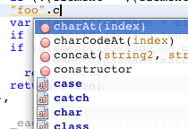
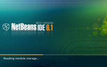
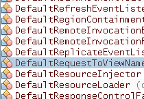
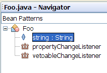
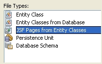
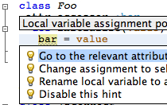
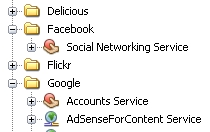
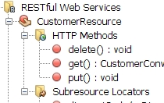

NetBeans IDE 6.1 信息
NetBeans IDE 是一个使用 Java 编程语言编写且基于标准的模块化集成开发环境 (Integrated Development Environment, IDE)。NetBeans 项目由开放源代码的 IDE 和应用程序平台组成，该平台可作为构建任何类型的应用程序的通用框架。
发行版概述
NetBeans IDE 6.1 发行版提供了一些新增功能和增强功能，例如，丰富了 JavaScript 编辑功能、支持使用 Spring Web 框架、使 MySQL 集成更紧密以及改进了在相关项目之间共享库的方法。通过使用新的编辑器快速修复功能、Ruby 平台管理器、JRuby 快速调试支持以及很多其他新增功能和修复，进一步完善了已获得业界好评的 Ruby/JRuby 支持。
应广大用户要求，现已恢复了 6.0 发行版中删除的 Bean 模式和 JSF CRUD 生成功能。此外，还以插件形式提供了早期版本的新模块，例如 ClearCase 支持。
本发行版还改善了性能，尤其是加快了启动速度（启动时间最多可缩短 40%）、减少了占用的内存以及提高了处理较大项目时的响应速度。有关本发行版所提供的功能列表，请参见下面的内容。
获取 NetBeans IDE 6.1

文档
请阅读以下文档可了解 NetBeans IDE 6.1。
功能集锦
- 提供 JavaScript 支持
- 支持语义突出显示功能
- 提供代码完成和类型分析功能
- 提供快速修复和语义检查功能
- 支持重构功能
|
 |
- 性能得以改善
- 启动时间最多可缩短 40%
- 解析更智能，因而代码完成速度更快
- 占用的内存更少
|

|
- 提供 Spring Framework 支持
- 支持捆绑的 Spring Framework 2.5 库
- 提供用于 XML 配置文件和 Spring Web MVC 控制器的向导
- 提供 Bean 名称以及 Java 类和属性的代码完成功能
- 提供 Web 项目中的 Spring Web MVC 框架支持
- 了解更多信息...
|

|
- 提供数据库资源管理器中的新增 MySQL 支持
- 提供注册 MySQL 服务器功能
- 支持查看、创建和删除数据库功能
- 提供轻松启动 MySQL 的管理工具
|

|
- 提供 Java Bean 支持
- 提供“导航”窗口中的“Bean 模式”
- 提供生成 Bean 属性功能
- 提供 BeanInfo 编辑器
|

|
- 提供 JSF CRUD 生成器
- 通过实体类生成 JavaServer Faces CRUD 应用程序
- 支持所有类型的实体关系（一对一、一对多、多对一以及多对多）。
- 支持所有类型的主键（单列、复合以及生成的主键）。
|

|
- 提供 Ruby/JRuby 支持
- 增强了编辑器的功能，其中包括新增的提示和修复功能
- 支持 JRuby 快速调试功能
- 提供平台管理器
- 改进了 Rails 项目中的服务器和数据库集成
|

|
- 提供 Javadoc 代码完成
- 支持标准标记，如 @param 等
- 提供参数、异常等的代码完成功能
|

|
- 提供常用 Web API 支持
- 轻松创建 Mashup 应用程序
- 通过在 POJO、Servlet、JSP 以及 REST 风格的 Web 服务中执行拖放操作，NetBeans IDE 即可生成访问服务所需的全部代码
- 支持 Web API，例如 Google、Facebook、Yahoo 和 YouTube
|

|
- 提供 REST 风格的 Web 服务支持
- 使用 Jersey 构建符合 JSR311 的 REST 风格的 Web 服务
- 使用新的 REST 测试客户端测试应用程序
- 使用向导创建基于 JPA 实体类的 REST 服务并生成基于 WADL 的 JavaScript 客户端桩模块
|

|
- 共享项目（也称为“可共享库”）
- 使用相对库路径指定库依赖关系（适用缺省 Java、Web 和所有 Java EE 项目类型）
- 更轻松地与团队中的其他成员共享项目，例如在使用版本控制系统时
- 实现无人值守的项目生成
|

|
- 提供 Java Mobility
- 提供用于 MacOS X 上的 MIDP 应用程序的 Mpowerplayer MIDP 仿真器（可从插件中心获得）
- 提供用于 SVG 定制组件的 SVG 编写器
- 提高了文档质量和稳定性
|

|


{kind=link}
{kind=link}
{kind=link}
{kind=link}
{kind=link}
{kind=link}